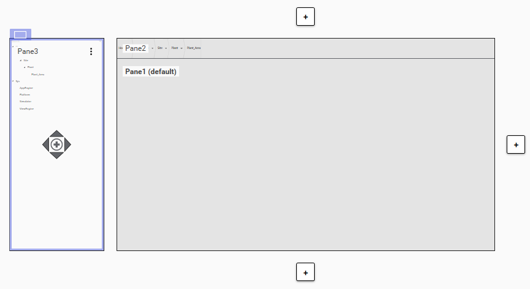
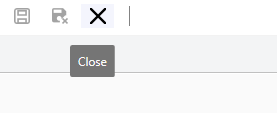
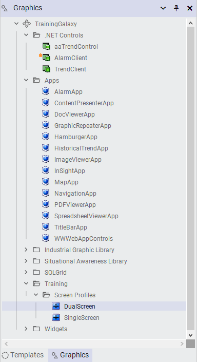

Page 70
Module 2 — Getting Started | Pages 69-94

Lab 2 – Creating a Screen Profile and Layout
Lab 2 – Creating a Screen Profile and Layout
Introduction
In this lab, you will create graphic toolsets on the Graphics tab for organizing some out-of-the-box
items, as well as a Training toolset for organizing the graphic items created in this course.
You will create two screen profiles and review the default settings in the Screen Profile Editor.
Then, you will create a layout and configure it in the Layout Editor. The layout you create will
contain three panes, one of which will be a slide-in pane.
As part of the configuration, you will assign OMI Apps to two of the panes, to be used for
navigation in a running ViewApp. You will specify a content type for one of the panes, which will
enable it to be used for auto-fill purposes at runtime.
You will be able to view the configurations in a running ViewApp in later labs.
Content workflow highlight: Assigning content directly to layout panes
Objectives
Upon completion of this lab, you will be able to:
Create a toolset
Create a screen profile
Create a layout with multiple panes
Configure pane properties
Add and configure a slide-in pane
Search for content in the Layout Editor
Assign OMI Apps to panes

Create New Graphic Toolsets
In the following steps, you will create three graphic toolsets on the Graphics tab: One for Apps, one
for .NET controls, and one for organizing graphic items created in this course.
1.
On the Graphics tab, right-click TrainingGalaxy and select New | Graphic Toolset.
A new graphic toolset with the default name is created on the Graphics tab.

Lab 2 – Creating a Screen Profile and Layout
2.
Rename the new toolset to Apps.

3.
On the Graphics tab, select the following items and drag them to the Apps toolset.
AlarmApp
ContentPresenterApp
DocViewerApp
GraphicRepeaterApp
HamburgerApp
HistoricalTrendApp
ImageViewerApp
InSightApp
MapApp
NavigationApp
PDFViewerApp
SpreadsheetViewerApp
TitleBarApp
WWWebAppControls

Lab 2 – Creating a Screen Profile and Layout
4.
On the Graphics tab, right-click TrainingGalaxy again and select New | Graphic Toolset.
5.
Rename the new toolset to .NET Controls.
6.
On the Graphics tab, select the following items and drag them to the .NET Controls toolset.
aaTrendControl
AlarmClient
TrendClient

7.
On the Graphics tab, right-click TrainingGalaxy again and select New | Graphic Toolset.
8.
Rename the new toolset to Training.

Lab 2 – Creating a Screen Profile and Layout
Create a New Sub-Toolset and Two Screen Profiles
In the following steps, you will create a new sub-toolset under the Training toolset for organizing
screen profiles. Then, you will create two screen profiles.
9.
On the Graphics tab, right-click the Training toolset and select New | Graphic Toolset.
A new toolset with the default name is created under the Training toolset.
10. Rename the new toolset to Screen Profiles.

11. Right-click the Training \ Screen Profiles toolset and select New | Screen Profile.
A new screen profile with the default name is created in the Training \ Screen Profiles
toolset.


Lab 2 – Creating a Screen Profile and Layout
12. Rename the new screen profile to SingleScreen.
13. Double-click SingleScreen to open it in the Screen Profile Editor.


14. Review the configuration, but leave all the default settings.
15. Click Close to close the Screen Profile Editor.
16. On the Graphics tab, right-click the Training \ Screen Profiles toolset and select New |
Screen Profile.
A new screen profile with the default name is created in the Training \ Screen Profiles
toolset.
17. Rename the new screen profile to DualScreen.


Lab 2 – Creating a Screen Profile and Layout
18. Double-click DualScreen to open it in the Screen Profile Editor.
19. Click Add Screen to add a second screen to the screen profile.
A new screen is added with the name Screen1.
20. Ensure Screen1 is selected, and in the Name property in the properties list, rename the
screen to Secondary.

21. Click Save and Close to save and close the DualScreen screen profile.
The Check-in dialog box appears.
22. Click Check-in to check in the DualScreen screen profile.

Lab 2 – Creating a Screen Profile and Layout
Create a New Sub-Toolset and Layout
In the following steps, you will create a new sub-toolset in the Training toolset for organizing
layouts. Then you will create a layout. Initially, the layout will have one pane, but you will add two
more panes to the layout and configure them. One of the panes will be a slide-in pane.
23. On the Graphics tab, right-click the Training toolset and select New | Graphic Toolset.
A new toolset with the default name is created under the Training toolset.
24. Rename the new toolset to Layouts.

25. On the Graphics tab, right-click the Training \ Layouts toolset and select New | Layout.

Lab 2 – Creating a Screen Profile and Layout
A new layout with the default name is created in the Training \ Layouts toolset.
26. Rename the new layout to Main.


27. Double-click Main to open it in the Layout Editor.
Notice that by default, the new layout contains one pane named Pane1, which is set as the
default pane.
28. In the top-right corner of the editor, click Maximize to maximize the editor window to full
screen.
29. At the bottom of the editor, click Zoom to Fit to maximize the layout preview.


Lab 2 – Creating a Screen Profile and Layout
30. In the layout preview area, select Pane1.
31. Click the Add new pane up-arrow to add a new pane.
A new pane is added above Pane1.
The name of the new pane is Pane2.


32. Select Pane2, and on the Properties tab, change the Size \ Height property to 100 and press
Enter.
Pane2 is resized to 100 px in the layout preview area.


Lab 2 – Creating a Screen Profile and Layout
33. On the left side of the layout, click the Add Slide-In Pane button.
A slide-in pane is added on the left side of the layout.
The name of the slide-in pane is Pane3.

Assign Content to Panes
Now you will assign content to two of the panes. You will use the Search field on the Toolbox tab
to find navigation controls to add to the layout. You will add a navigation breadcrumb control to
Pane2, which is the pane at the very top of the layout. You will also add a navigation tree control to
Pane3, which is the slide-in pane on the left side of the layout.
34. On the right side of the Layout Editor, select the Toolbox tab.
Notice the Search field at the top of the tab.

Lab 2 – Creating a Screen Profile and Layout
35. In the Search field, enter nav.
Multiple items are found and shown in the preview area on the Toolbox tab. Two controls from
the NavigationApp are shown as NavBreadcrumbControl and NavTreeControl.


36. From the Toolbox tab preview area, drag NavBreadcrumbControl to Pane2.
As you drag the control over the preview area, panes become highlighted to indicate where
you can drop the control. The following example shows Pane2 highlighted.
The NavBreadcrumbControl is previewed in Pane2.
37. From the Toolbox tab preview area, drag NavTreeControl to Pane3.

Lab 2 – Creating a Screen Profile and Layout
The NavTreeControl is previewed in Pane3.
The layout in the preview area should look as follows:

Configure Content Types for the Default Pane
In the following steps, you will configure a content type for Pane1, which is the default pane. The
content type determines which type of content can be displayed in that pane at runtime.
38. In the layout preview area, select Pane1.
39. With Pane1 selected, on the Properties tab, click the drop-down arrow on the right side of the
General \ Content Type(s) property.
A list of content types appears. Notice that by default, no content types are checked.


Lab 2 – Creating a Screen Profile and Layout
40. Check the Overview content type.

41. In the top-left corner of the editor, click Save and Close to save and close the Main layout.
The Check-in dialog box appears.
42. Click Check-in to check in the Main layout.
Review the lab steps above and list the main configuration actions you completed.
Consider the dependencies between steps and how skipping one might affect the outcome.